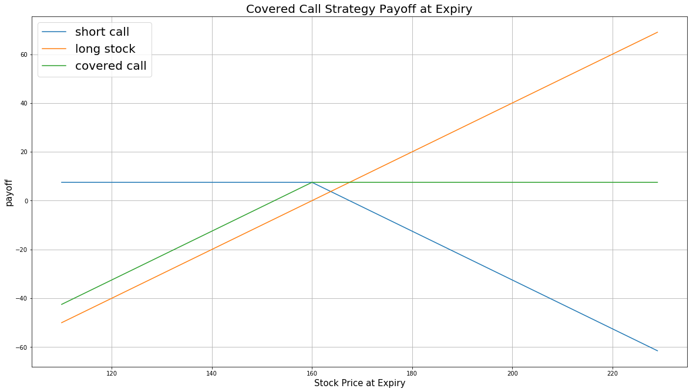

Definition
A Covered Call is an options strategy that involves both underlying stock and an options contract. The trader buys (or already owns) a stock, then sells call options for the same amount of stock. The aim of the Covered Call is to gain profits from option premium by selling calls written on the stock you already owned. At any time for US options or at expiration for European options, if the stock moves below the strike price, you can keep the premium and still maintain the stock position. If the price moves above the strike, the options contract is exercised you will sell the stock at the strike price but still keep the premium. The risk of a Covered Call also comes from the long stock position, which could drop.
The payoff is as follows:
import numpy as np
import matplotlib.pyplot as plt
%pylab inline
price = np.arange(110,230,1) # the stock price at expiration date
strike = 160 # the strike price
premium = 7.5 # the option premium
# the payoff of short call position
payoff_short_call = [min(premium, -(i - strike-premium)) for i in price]
# the payoff of long stock postion
payoff_long_stock = [i-strike for i in price]
# the payoff of covered call
payoff_covered_call = np.sum([payoff_short_call, payoff_long_stock], axis=0)
plt.figure(figsize=(20,11))
plt.plot(price, payoff_short_call, label = 'short call')
plt.plot(price, payoff_long_stock, label = 'long stock')
plt.plot(price, payoff_covered_call, label = 'covered call')
plt.legend(fontsize = 20)
plt.xlabel('Stock Price at Expiry',fontsize = 15)
plt.ylabel('payoff',fontsize = 15)
plt.title('Covered Call Strategy Payoff at Expiration',fontsize = 20)
plt.grid(True)

Implementation
Step 1: Initialize the Algorithm
At the beginning of your algorithm, you need to set the start date, the end date and the cash required for the algorithm. For options algorithm, you need to add the equity and the options written on this equity.
def Initialize(self):
self.SetStartDate(2016, 01, 01)
self.SetEndDate(2016, 06, 30)
self.SetCash(100000)
equity = self.AddEquity("IBM", Resolution.Minute)
option = self.AddOption("IBM", Resolution.Minute)
self.symbol = option.Symbol
Second, in the initialization process, you need to add a coarse selection for the options contracts. Here we use option.SetFilter(-3, +3, timedelta(0), timedelta(60)) to implement the coarse selection process. If today's market price of underlying stock is $159, the strike prices of IBM options are spaced $5. Then SetFilter will look up the most at the money contract with the strike being K=$160 (Here K might not be $159 since rarely will option be ATM exactly). The filter will look for options with strikes between and including (160-5*3, 160+5*3). The time to expiration of these options is restricted within 60 days from now on.
Step 2: Choose the Call Options Contract
First, purchase the underlying stock for 100 shares or an integral multiple of 100 shares. For options contract, one contract represents 100 shares of stock.
Second, filter out the call options from candidate contracts.call = [x for x in chain if x.Right == 0] For call options, the right is 0, for put options, the right is 1.
Third, select the most ATM contract with the furthest expiration date from call options contracts. Sell this call contract for each 100 shares of stock you own. Here you can also choose ITM or OTM contract based on your expected level of profit and the level of risk you can take.
def SellCall(self,optionchain):
for i in optionchain:
if i.Key != self.symbol: continue
chain = i.Value
call = [x for x in chain if x.Right == 0] # filter the call options contracts
# sorted the contracts according to their expiration dates and choose the ATM options
contracts = sorted(sorted(call, key = lambda x:abs(chain.Underlying.Price - x.Strike)), key = lambda x: x.Expiry, reverse=True)
if len(contracts) == 0: continue
contract = contracts[0]
self.contract_symbol = contract.Symbol
self.Sell(self.contract_symbol, 1) # short the call options
Fourth, sell a new call option at the expiration date and then repeat this process each time when the options position expires.
if slice.Delistings.Count > 0 and self.Portfolio.HoldStock:
for x in slice.Delistings:
if x.Key == self.contract_symbol:
self.SellCall(optionchain)
Summary
From the above strategy we can see, the share price of IBM had been increasing during the backtesting period from January 2016 to June 2016. The drawdown is small. The Covered Call strategy performs better than a simple buy-and-hold strategy of underlying stock in a bearish market. The benefit of Covered Call is that you keep the premium, stock gains up to the strike price, and accrued dividends during the stock holding period. But in a bullish market, you will lose the potential gains over the strike price.
Algorithm